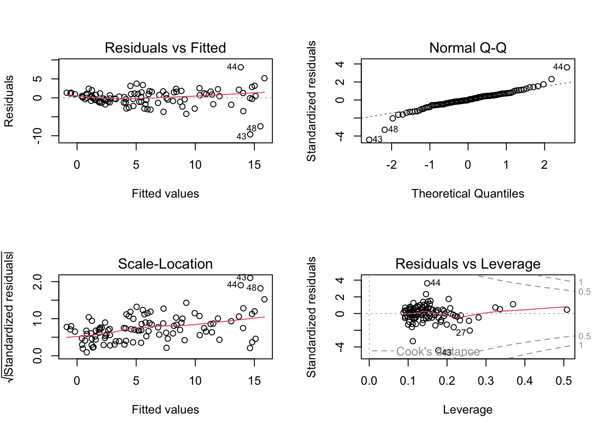
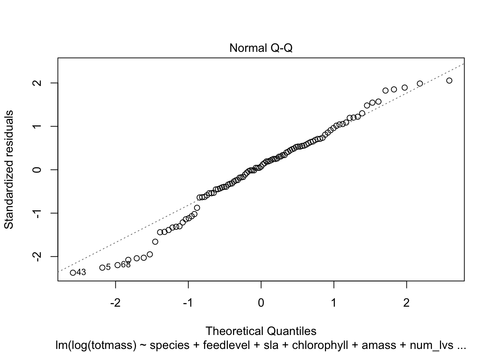
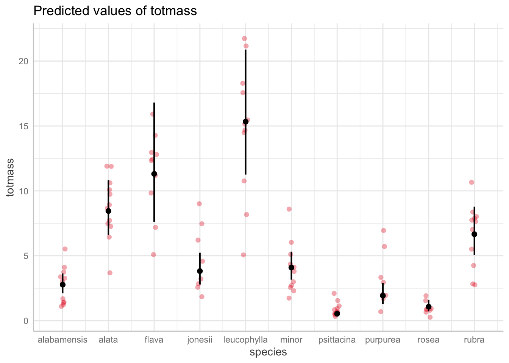
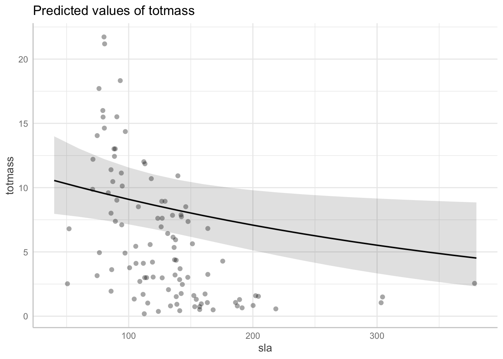

Code
knitr::opts_chunk$set(echo = TRUE, message = FALSE, warning = FALSE)---
title: "Untitled"
format:
html:
toc: true
toc-location: left
code-fold: true
theme: yeti
execute:
message: false
warning: false
------
title: "Untitled"
format:
html_document:
toc: true
toc-location: left
code_folding: true
theme: yeti
---knitr::opts_chunk$set(echo = TRUE, message = FALSE, warning = FALSE)# should haves (from last week)
library(tidyverse)
library(here)
library(janitor)
library(ggeffects)
library(performance)
library(naniar) # or equivalent
library(flextable) # or equivalent
library(car)
library(broom)
# would be nice to have
library(corrplot)
library(AICcmodavg)
library(GGally)plant <- read_csv(here("data", "knb-lter-hfr.109.18", "hf109-01-sarracenia.csv")) %>%
# make the column names cleaner
clean_names() %>%
# selecting the columns of interest
select(totmass, species, feedlevel, sla, chlorophyll, amass, num_lvs, num_phylls)gg_miss_var(plant)
plant_subset <- plant %>%
drop_na(sla, chlorophyll, amass, num_lvs, num_phylls)(example writing) To determine the relationships between numerical variables in our dataset, we calculated Pearsons r and visually represented correlation using a correlation plot.
# calculate Pearson's r for numerical values only
plant_cor <- plant_subset %>%
select(feedlevel:num_phylls) %>%
cor(method = "pearson")
# creating a correlation plot
corrplot(plant_cor,
# change the shape of what's in the cells
method = "ellipse",
addCoef.col = "black"
)
plant_subset %>%
select(species:num_phylls) %>%
ggpairs()
(example) To determine how species and physiological characteristics predict biomass, we fit multiple linear models.
null <- lm(totmass ~ 1, data = plant_subset)
full <- lm(totmass ~ species + feedlevel + sla + chlorophyll + amass + num_lvs + num_phylls, data = plant_subset)We visually assess normality and homoskedasticity of residuals using diagnostic plots for the full model:
par(mfrow = c(2, 2))
plot(full)
We also tested for normality using the Shapiro-Wilk test (null hypothesis: variable of interest (i.e. the residuals) are normally distributed).
We tested for heteroskedasticity using the Breusch-Pagan test (null hypothesis: variable of interest has constant variance).
check_normality(full)Warning: Non-normality of residuals detected (p < .001).check_heteroscedasticity(full)Warning: Heteroscedasticity (non-constant error variance) detected (p < .001).null_log <- lm(log(totmass) ~ 1, data = plant_subset)
full_log <- lm(log(totmass) ~ species + feedlevel + sla + chlorophyll + amass + num_lvs + num_phylls, data = plant_subset)
plot(full_log)



check_normality(full_log)OK: residuals appear as normally distributed (p = 0.107).check_heteroscedasticity(full_log)OK: Error variance appears to be homoscedastic (p = 0.071).Evaluate multicollinearity:
car::vif(full_log) GVIF Df GVIF^(1/(2*Df))
species 42.351675 9 1.231351
feedlevel 1.621993 1 1.273575
sla 1.999989 1 1.414210
chlorophyll 1.949828 1 1.396362
amass 2.872084 1 1.694722
num_lvs 2.813855 1 1.677455
num_phylls 2.995510 1 1.730754We evaluated multicollinearity by calculating generalized variance inflation factor and determined that…
try some more models:
addressing the question: what set of predictor variables best explains the response?
model2_log <- lm(log(totmass) ~ species, data = plant_subset)check assumptions for model 2:
plot(model2_log)


check_normality(model2_log)OK: residuals appear as normally distributed (p = 0.374).check_heteroscedasticity(model2_log)OK: Error variance appears to be homoscedastic (p = 0.100).compare models using Akaike’s Information criterion (AIC) values:
AICc(full_log)[1] 133.9424AICc(model2_log)[1] 157.5751AICc(null_log)[1] 306.0028MuMIn::AICc(full_log, model2_log, null_log) df AICc
full_log 17 133.9424
model2_log 11 157.5751
null_log 2 306.0028MuMIn::model.sel(full_log, model2_log, null_log)Model selection table
(Int) ams chl fdl num_lvs num_phy sla spc df
full_log -1.3390 0.002338 0.004368 -0.4743 0.09176 -0.03959 -0.002493 + 17
model2_log 0.8836 + 11
null_log 1.3500 2
logLik AICc delta weight
full_log -46.371 133.9 0.00 1
model2_log -66.337 157.6 23.63 0
null_log -150.941 306.0 172.06 0
Models ranked by AICc(x) we compared models using AIC and chose the model with the lowest value, which was…
We found that the ______ model including ___ ____ __ predictors best predicted _______ (model summary).
summary(full_log)
Call:
lm(formula = log(totmass) ~ species + feedlevel + sla + chlorophyll +
amass + num_lvs + num_phylls, data = plant_subset)
Residuals:
Min 1Q Median 3Q Max
-0.88872 -0.20811 0.02825 0.24218 0.78287
Coefficients:
Estimate Std. Error t value Pr(>|t|)
(Intercept) -1.339043 0.597727 -2.240 0.027624 *
speciesalata 1.113163 0.184021 6.049 3.56e-08 ***
speciesflava 1.404562 0.262955 5.341 7.29e-07 ***
speciesjonesii 0.319652 0.196426 1.627 0.107281
speciesleucophylla 1.709035 0.227608 7.509 4.88e-11 ***
speciesminor 0.389310 0.187903 2.072 0.041239 *
speciespsittacina -1.645198 0.207035 -7.946 6.36e-12 ***
speciespurpurea -0.364348 0.254380 -1.432 0.155643
speciesrosea -0.947383 0.260495 -3.637 0.000467 ***
speciesrubra 0.875342 0.196361 4.458 2.46e-05 ***
feedlevel -0.474255 0.234493 -2.022 0.046199 *
sla -0.002493 0.001160 -2.149 0.034430 *
chlorophyll 0.004368 0.001189 3.672 0.000414 ***
amass 0.002338 0.002988 0.782 0.436166
num_lvs 0.091764 0.022413 4.094 9.46e-05 ***
num_phylls -0.039585 0.051714 -0.765 0.446068
---
Signif. codes: 0 '***' 0.001 '**' 0.01 '*' 0.05 '.' 0.1 ' ' 1
Residual standard error: 0.413 on 87 degrees of freedom
Multiple R-squared: 0.8687, Adjusted R-squared: 0.8461
F-statistic: 38.38 on 15 and 87 DF, p-value: < 2.2e-16table <- tidy(full_log, conf.int = TRUE, exponentiate = TRUE) %>%
# change the p-value numbers if they're really small
# change the estmaes, standard error, and t-tstatistics to round to ___ digits
# using mutate
# make it into a flextable
flextable() %>%
# fit it to the viewer
autofit()
tableterm | estimate | std.error | statistic | p.value | conf.low | conf.high |
|---|---|---|---|---|---|---|
(Intercept) | 0.2620963 | 0.597726532 | -2.2402271 | 0.027624109607483092 | 0.07989121 | 0.8598503 |
speciesalata | 3.0439700 | 0.184020930 | 6.0491086 | 0.000000035633453091 | 2.11150520 | 4.3882219 |
speciesflava | 4.0737422 | 0.262954818 | 5.3414577 | 0.000000728606298866 | 2.41551101 | 6.8703374 |
speciesjonesii | 1.3766491 | 0.196426010 | 1.6273423 | 0.107280978897063603 | 0.93168024 | 2.0341343 |
speciesleucophylla | 5.5236308 | 0.227608275 | 7.5086698 | 0.000000000048774953 | 3.51359348 | 8.6835591 |
speciesminor | 1.4759626 | 0.187903472 | 2.0718636 | 0.041239074384119417 | 1.01595786 | 2.1442479 |
speciespsittacina | 0.1929744 | 0.207034720 | -7.9464830 | 0.000000000006356134 | 0.12787503 | 0.2912149 |
speciespurpurea | 0.6946497 | 0.254380246 | -1.4322951 | 0.155642631385407848 | 0.41897004 | 1.1517249 |
speciesrosea | 0.3877543 | 0.260494896 | -3.6368593 | 0.000466976667424191 | 0.23104447 | 0.6507554 |
speciesrubra | 2.3996956 | 0.196361315 | 4.4578123 | 0.000024573993550446 | 1.62426029 | 3.5453301 |
feedlevel | 0.6223484 | 0.234492879 | -2.0224719 | 0.046198841611705344 | 0.39049690 | 0.9918580 |
sla | 0.9975100 | 0.001160230 | -2.1487826 | 0.034429589763780327 | 0.99521233 | 0.9998130 |
chlorophyll | 1.0043779 | 0.001189484 | 3.6724575 | 0.000414110175835846 | 1.00200611 | 1.0067553 |
amass | 1.0023404 | 0.002988210 | 0.7822929 | 0.436166480376765642 | 0.99640474 | 1.0083114 |
num_lvs | 1.0961060 | 0.022413350 | 4.0941643 | 0.000094562482452723 | 1.04834735 | 1.1460404 |
num_phylls | 0.9611882 | 0.051713890 | -0.7654630 | 0.446067519262092982 | 0.86729854 | 1.0652419 |
use ggpredict() to backtranform estimates
model_pred <- ggpredict(full_log, terms = "species", back.transform = TRUE)
plot(ggpredict(full_log, terms = "species", back.transform = TRUE), add.data = TRUE)
plot(ggpredict(full_log, terms = "chlorophyll", back.transform = TRUE), add.data = TRUE)
plot(ggpredict(full_log, terms = "sla", back.transform = TRUE), add.data = TRUE)
model_pred# Predicted values of totmass
species | Predicted | 95% CI
---------------------------------------
alabamensis | 2.78 | [2.12, 3.64]
alata | 8.45 | [6.60, 10.82]
flava | 11.31 | [7.61, 16.80]
jonesii | 3.82 | [2.79, 5.24]
minor | 4.10 | [3.16, 5.31]
psittacina | 0.54 | [0.37, 0.77]
purpurea | 1.93 | [1.28, 2.90]
rubra | 6.66 | [5.05, 8.78]
Adjusted for:
* feedlevel = 0.18
* sla = 129.27
* chlorophyll = 471.29
* amass = 35.26
* num_lvs = 7.08
* num_phylls = 0.58